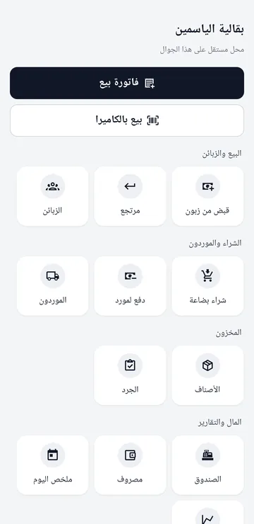
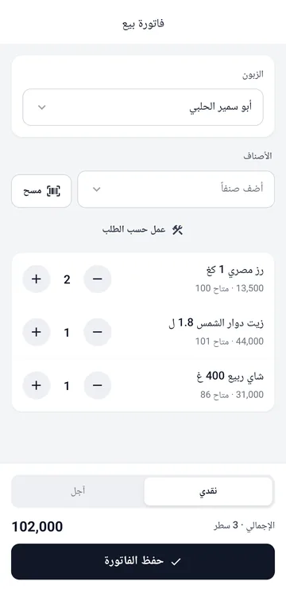
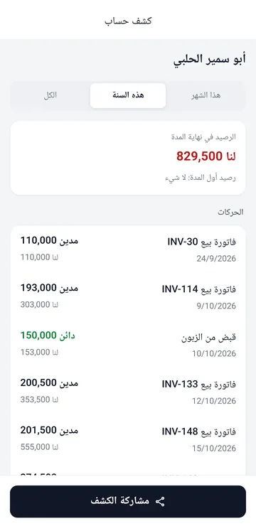
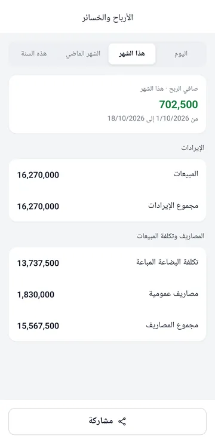

تطبيق الجوال والأجهزة
تطبيق أندرويد بطريقتين: دفاتر محل كاملة على الجوال بلا كمبيوتر، أو جهاز مندوب أو فرع يتزامن مع كمبيوتر الشركة.
- تثبيت التطبيق
- لغة التطبيق: العربية أو English
- محل مستقل على الجوال
- تصحيح فاتورة أو سند على الجوال
- جهاز مندوب أو فرع: الربط بكمبيوتر الشركة
- التابلت لا يتصل بكمبيوتر الشركة
- المزامنة
تثبيت التطبيق
- نزّل التطبيق من رابط أندرويد وافتح الملف.
- إن طلب الجوال السماح بالتثبيت من هذا المصدر فاسمح به مرة واحدة.
- التحديثات تظهر داخل التطبيق: اضغط التنبيه فينزل الإصدار الجديد فوق القديم وتبقى بياناتك.
لغة التطبيق: العربية أو English
- أول ما يُفتح التطبيق يسألك عن اللغة قبل أي شيء: العربية أو English.
- لتغييرها لاحقاً: بيانات المحل ← لغة البرنامج. يُعاد فتح التطبيق وحده ليصير اتجاه الشاشة من اليسار في الإنجليزية ومن اليمين في العربية، وتبقى بياناتك كما هي.
- على جهاز مندوب أو فرع: إن كان للمستخدم لغة في الإعدادات ← المستخدمون على الكمبيوتر فهي التي تظهر حين يدخل.
- الأسماء التي كتبتها أنت (الأصناف والزبائن) تبقى كما كتبتها.
محل مستقل على الجوال
- اختر محل مستقل على هذا الجوال واكتب اسم المحل.
- من الشاشة الرئيسية: فاتورة بيع، بيع بالكاميرا بالباركود، القبض والشراء والمصاريف والجرد.
- الأرباح والخسائر والميزانية العمومية وكشف حساب كل زبون جاهزة للمشاركة على واتساب (القوائم المالية).




تصحيح فاتورة أو سند على الجوال
- فاتورة: افتح فواتير البيع أو فواتير الشراء واضغط الفاتورة، صحّحها واضغط حفظ التعديل. تبقى الأصلية ملغاة بقيد عكسي وتأخذ المعدّلة رقماً جديداً.
- سند قبض أو دفع أو رأس مال: من الصندوق، القلم بجانب السند للتعديل، والإشارة للإلغاء.
فاتورة من بيع بالكاميرا أو عليها مرتجع تُصحَّح بـمرتجع، والقائمة تقول لك ذلك عند الضغط عليها.
جهاز مندوب أو فرع: الربط بكمبيوتر الشركة
- على كمبيوتر الشركة افتح الإعدادات ← المزامنة واضغط اسمح بالوصول من الشبكة. إن سأل ويندوز عن الإذن فوافق.
- اضغط أظهر رمز الربط فيظهر رمز مربّع (QR).
- على الجوال اختر جهاز تابع لشركتي، ثم امسح رمز الربط ووجّه الكاميرا إلى الرمز، واكتب رمزاً قصيراً للجهاز مثل M1.
- اضغط اربط وابدأ. يدخل كل مستخدم باسمه، ويبيع ويقبض بلا إنترنت، ويتزامن الجهاز حين يعود إلى شبكة الشركة.
التابلت لا يتصل بكمبيوتر الشركة
تحقّق بالترتيب:
- الجهازان على شبكة الواي فاي نفسها، وليست شبكة الضيوف.
- على الكمبيوتر: الإعدادات ← المزامنة يقول «الوصول من الشبكة مفعّل»، والعنوان الظاهر هناك هو نفسه في التابلت. الأسهل: امسح رمز الربط بدل الكتابة.
- برنامج VPN على الكمبيوتر (مثل NordVPN) يخفيه عن الشبكة: أوقفه، أو أوقف فيه خيار «Invisibility on LAN». صفحة المزامنة تنبّهك إن وجدت VPN.
- إن سأل ويندوز عن السماح لسيرو بالشبكة فوافق. وإن رفضت سابقاً: أوقف الوصول من الشبكة ثم فعّله، فيسأل من جديد.
- حدّث البرنامج إلى 0.1.22 أو أحدث والتطبيق إلى 1.0.8 أو أحدث.
رسالة التابلت تقول ما المشكلة: «المفتاح غير صحيح» يعني أظهر رمز ربط جديداً وامسحه، و«لا يصل هذا الجهاز» يعني الشبكة أو الكمبيوتر.
المزامنة
- يتزامن الجهاز التابع كل دقيقة وعند فتح التطبيق، حين يصل إلى كمبيوتر الشركة.
- كل جهاز يرقّم فواتيره بسلسلته، فلا تتكرر الأرقام.
- إن عدّل جهازان الشيء نفسه يُعتمد الأحدث ويظهر التعارض في الإعدادات ← المزامنة لتراجعه. اضبط ساعة كل جهاز على الوقت الصحيح.